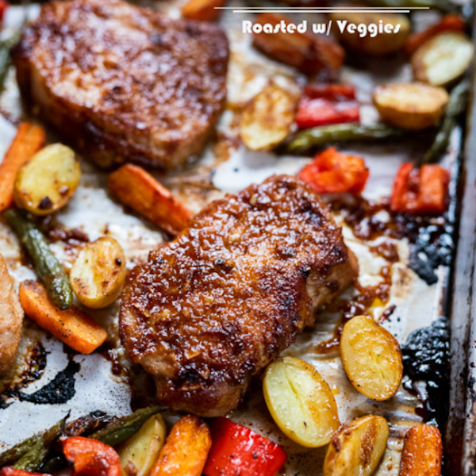

Garlic Caper Chicken
Ingredients
- 1 pork roast
- 3/4lb of carrot
- 1 tbsp of honey
- 1 tsp of each: garlic powder, onion powder, parsley and smoked paprika
- 1/2 lb sweet potato
- 1 shallot
- 1 tbsp of fig spread
- 1/2 lb of brussels sprouts
- 1 tbsp dijon mustard
- 2 tbsp of balsamic vinegar
Method
- Bring honey to room temperature.
- Place oven rack in center of oven and set to 450 F.
- Wash and dry the fresh produce.
- Halve the sweet potato then cut crosswise in 1/4" pieces.
- Cut off and discard brussels sprouts stems, then cut in half lengthwise.
- Peel the carrots, half lengthwise and cut crosswise into 2 inch pieces.
- Place all produce in a bowl, cover in spice blend and olive oil then toss.
- Arrange all veg on a sheet tray evenly.
- Pat the pork dry with paper towel
- Transfer pork to bowl, drizzle with olive oil and season with spice blend salt and pepper.
- Transfer to center of the sheet tray.
- Roast pork and vegetables for about 25 to 27 min.
- Peel and finely chop shallot, place in large bowl, add vinegar and drizzle of olive oil
- Mix fig spread, honey and mustard in separate bowl
- Remove food from oven, toss vegetables in balsamic, shallot marinade
- Rest pork for 5 minutes, then slice crosswise and top with honey fig sauce
- Split into two portions and serve.
